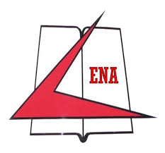
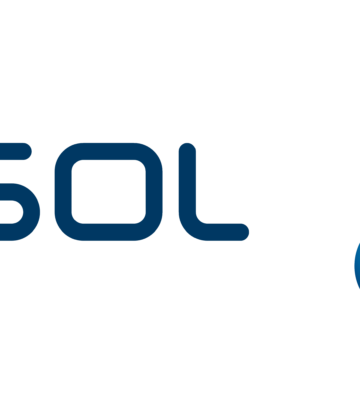

A TRIÓNICA MOÇAMBIQUE, LDA., é uma empresa de direito moçambicano, registada na Conservatória de Registo das Entidades Legais sob o NUEL: 100236086 e, publicada no Boletim da Republica nº 113, III serie de 21 de Setembro de 2011.
Somos uma empresa moçambicana, localizada na cidade de Maputo, focada no desenvolvimento de soluções e realizações de projectos, tendo como ponto primordial proporcionar aos nossos clientes produtos e serviços de alta qualidade com métodos e tecnologias mais recentes de acordo com as suas necessidades, contribuindo assim para o desenvolvimento sustentável do País nas áreas de:
Nossa equipe é formada por técnicos especializados e treinados em Moçambique, bem como no estrangeiro, destacados pela sua competência e flexibilidade no atendimento contínuo aos nossos clientes em todas as regiões do país, desde o primeiro contacto até aos serviços pós-venda.
Para além do fornecimento do Equipamento, prestamos serviços de Instalação e Treinamento para o bom uso dos equipamentos, oferecemos garantia e executamos serviços de manutenção dentro de todo o território nacional. Possuímos diversos equipamentos de diagnóstico de avarias, reparação e calibração de equipamentos e ainda peças de reposição de excelente qualidade.
"Não vendemos caixas com equipamentos, vendemos SOLUÇÕES. Projectamos, fornecemos, instalamos e damos formação aos utilizadores."
Projectar e implementar soluções inovadoras e serviços que satisfaçam as necessidades e requisitos dos nossos clientes;
Garantir um serviço de assistência após venda de elevada qualidade e eficiência
Apostar em vencer pela qualidade dos serviços prestados, procurando as melhores práticas, as soluções mais inovadoras e eficientes com procedimentos mais eficazes.
Assumir cada vez mais um papel de empresa de referência em Moçambique no Fornecimento de Equipamentos Laboratoriais no mercado.
Destacarmo‐nos nas nossas áreas de negócio como empresa inovadora, diferenciada no produto e na globalidade do serviço;
Consolidar a nossa posição como empresa de referência em todo o processo: fornecimento de equipamento, treinamento, instalação, reparação e manutenção e
Valorizar a responsabilidade social e garantir viabilidade económica, satisfazendo trabalhadores e acionistas.
O que faz da Triónica Moçambique Lda., uma Empresa de referência no mercado é a credibilidade e confiança que detém entre os seus Clientes. Para tal, rege a sua actividade pelos seguintes valores:



